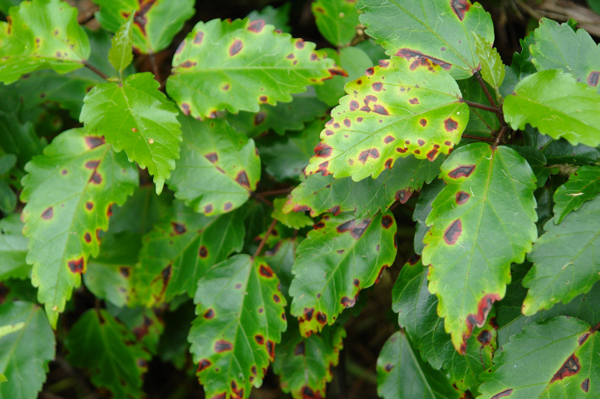
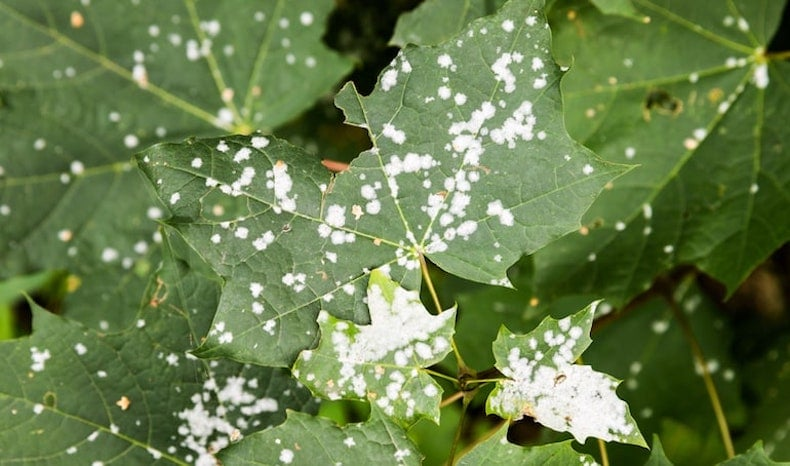

Common plant diseases that affect agricultural crops, including bacterial, viral, fungal, and pest-related conditions.

Diseases caused by pathogenic bacteria that infect plant tissues, often leading to wilting, spots, and tissue decay.

Diseases caused by fungi that create spores and spread through air, water, or soil contact, affecting plant health.